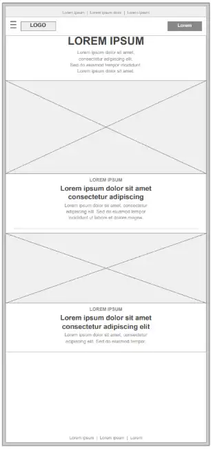
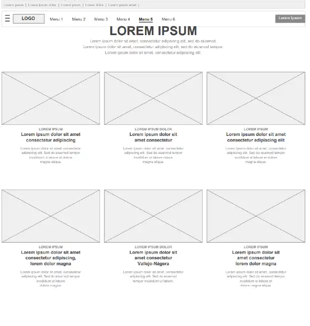

Website Planning Document
Project Name: Utah's Mighty Five
Site Name
Utah's Mighty Five
I chose this name because it references the iconic group of five national parks located entirely within Utah — Zion, Bryce Canyon, Capitol Reef, Canyonlands, and Arches. The name is widely recognized among outdoor enthusiasts and immediately communicates the geographic and cultural focus of the website.
Optional domain availability: utahmightyfive.org
Site Purpose
The purpose of this website is to serve as an interactive guide to Utah's national parks. Users can explore real park information fetched from the National Park Service API, browse available activities and campgrounds, save their favorite parks using local storage, and submit fictitious park reservations through an interactive form. The site aims to inspire and inform visitors who are planning — or simply dreaming about — a trip to Utah's stunning landscapes.
Scenarios
- Which national parks in Utah offer camping, and are there available sites I can reserve?
- What activities and trails are available at Zion National Park?
- Can I save my favorite parks to a personal list and come back to them later?
Color Schema
These are the six main colors selected for the site. They reflect the rugged desert landscapes, rich canyon rock, and wide skies of Utah's national parks — presented in a dark-mode palette.
#80B57E
Primary — headings, header background, primary buttons and interactive elements.
#222222
Body background — dark base that evokes the night sky above Utah's dark-sky parks.
#E9EB87
Secondary — highlights, labels, wireframe titles, and supporting accents.
#D82C41
Accent — section dividers, alerts, call-to-action borders, and reservation badges.
#4B5B6E
Primary hover — button and link hover states, cards overlay, secondary navigation.
#D57A37
Secondary hover — warm orange tones for canyon rock, warning banners, hover effects.
Typography
Roboto will be used for all body text because it is clean, highly legible on dark backgrounds, and widely supported across all devices.
Roboto Bold (700) will be used for page headings, section titles, and park names to create visual hierarchy and emphasis.
Both weights will be loaded from Google Fonts with a performance-first approach (preload + print media swap) to avoid render-blocking resources.
Wireframes
The following wireframes represent the general layout for the home page in both mobile and desktop views. Park cards are powered by the National Park Service API.
Mobile View

Desktop View
